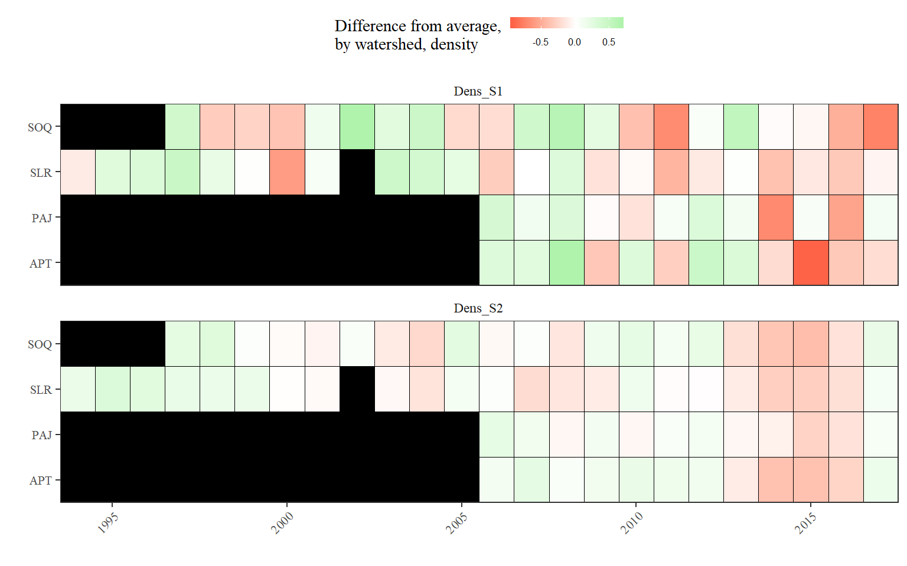

# globals
library(knitr)
opts_chunk$set(warning = FALSE, message = FALSE, dev.args = list(bg = 'transparent'), eval = T, echo = T, fig.path = 'imgs/')
library(tidyverse)
library(shiny)
library(sf)
library(raster)
library(mapview)
library(proj4shortcut)
library(plotly)
prj_geo <- geo_wgs84
prj_pro <- utm_wgs84('11s')
data(habitat)
data(fishdat)toplo <- fishdat
st_geometry(toplo) <- NULL
toplo <- toplo%>%
dplyr::select(Year, SiteID, Watershed, Dens_S1, Dens_S2) %>%
gather('Size class', 'density', Dens_S1, Dens_S2) %>%
mutate(Year = factor(Year)) %>%
filter(!is.na(Year))
p <- ggplot(toplo, aes(x = Year, y = density, fill = `Size class`)) +
geom_boxplot() +
facet_wrap(~Watershed, ncol = 1) +
scale_y_continuous('Density (fish/100ft)', trans = 'log10') +
theme_bw() +
theme(
axis.text.x = element_text(angle = 45, hjust = 1),
strip.background = element_blank(),
axis.title.x = element_blank(),
legend.position = 'top'
)
pSteelhead density by size classes across all sampled reaches by watershed.
Are densities changing by watershed? This plot shows changes from the long-term average by wateshed and density. Differences are based on the average across all years in a watershed and density class, log-scale.
# remove 1981 all watersheds
# remove 1994 from PAJ and SAQ
toeval <- fishdat %>%
filter(Year > 1981) %>%
filter(!(Year == 1994 & Watershed %in% c('PAJ', 'SOQ')))
# get averages across stations
st_geometry(toeval) <- NULL
toeval <- toeval %>%
gather('Size class', 'density', Dens_S1, Dens_S2) %>%
mutate(density = log10(1 + density)) %>%
group_by(Watershed, `Size class`, Year) %>%
summarise(
density = mean(density, na.rm = T)
) %>%
group_by(Watershed, `Size class`) %>%
mutate(
density_df = density - mean(density, na.rm = T)
)
pbase <- theme_bw(base_family = 'serif') +
theme(
panel.grid.major = element_blank(),
panel.grid.minor = element_blank(),
axis.text.x = element_text(angle = 45, hjust = 1, vjust = 1, size = 8),
axis.text.y = element_text(size = 8),
legend.position = 'top',
legend.direction = 'horizontal',
# plot.margin = unit(c(4,4,0,0), "lines"),
strip.background = element_blank(),
strip.text.y = element_text(angle = 0, hjust = 0, vjust = 0.5),
panel.background = element_rect(fill = 'black')
)
ggplot(toeval) +
geom_tile(aes(x = Year, y = Watershed, fill = density_df), colour = 'black') +
pbase +
scale_x_continuous('', expand = c(0, 0)) +
scale_y_discrete('', expand = c(0, 0)) +
scale_fill_gradient2('Difference from average,\nby watershed, density', low = 'tomato1', mid = "white", high = 'lightgreen', midpoint = 0) +
guides(fill = guide_colourbar(barheight = 0.5, barwidth = 5, label.theme = element_text(size = 6, angle = 0))) +
facet_wrap(~ `Size class`, ncol = 1)